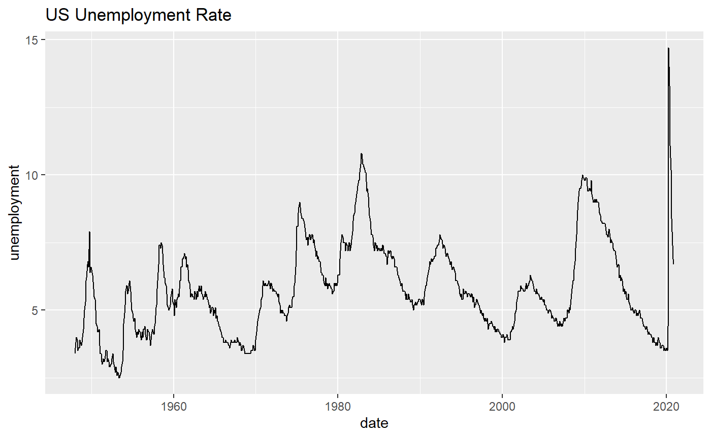
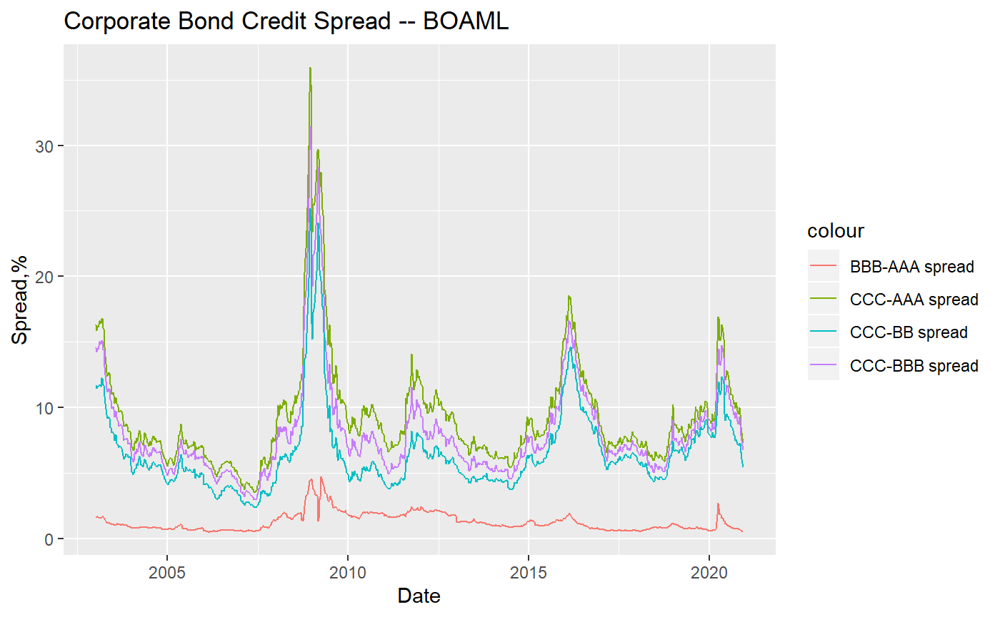

vignettes/the_Vignettes.Rmd
the_Vignettes.RmdThe fedeconseries, an R API package developed by Harry Sun and Weiwei Liu, provides an easy way to obtain real-time and archival data from the U.S. Frderal Reserve. Real-time series means there is no adjustment on raw data; archival series means there are adjustments on raw data (For instance on February 2, 1990, the US Bureau of Labor Statistics reported the US unemployment rate for the month of January, 1990 as 5.3 percent. Over 6 years later on March 8, 1996, the US unemployment rate for the same month January, 1990 was revised to 5.4 percent). The FRED official website tracks 767,000 US and international time series from 102 sources.
The latest development version can be installed from github.
# install.packages("devtools")
# library(devtools)
# devtools::install_github("harrysun26/fedeconseries")This function retrives the unique identifier(economic variable in database) used in the following functions get_econ_series and get_fedeconseries. For example, we pass keyword “unemployment” into function. If there are multiple keywords, use “+” inside quotes without spaces, for example, “industrial+production+index”.
This function retrieves real-time value(raw data) of economic series without adjustments. Here we pass “INDPRO” as keyword and “indpro” as a rename, with observation start and end date.
This function looks up unemployment data of the US, with varying available date adjustment. Here we pass the keyword “UNRATE”, rename as “unemployment”, with observation start and end date, and research (real) start and end date.
First, when using this package to fetch data from , you need to know the s_id which is the data identifier(anmely the economic variable name in website database). If you don’t know the series_id, you could try search_fedeconseries to search some keywords. Say you want to know the “unemployment”, but you do not the series identifier. Here is a way to solve the problem:
library(fedeconseries)
df <- search_fedeconseries("unemployment")
##for display purpose, I omited the 16th column, since it contains long notes.
head(df[1:5,1:4])## id realtime_start realtime_end
## 1 UNRATE 2020-12-22 2020-12-22
## 2 UNRATENSA 2020-12-22 2020-12-22
## 3 LNS14000031 2020-12-22 2020-12-22
## 4 CCSA 2020-12-22 2020-12-22
## 5 NROU 2020-12-22 2020-12-22
## title
## 1 Unemployment Rate
## 2 Unemployment Rate
## 3 Unemployment Rate - 20 Yrs. & Over, Black or African American Men
## 4 Continued Claims (Insured Unemployment)
## 5 Natural Rate of Unemployment (Long-Term)From the above dataframe, you could check the title, the frequency, the popularity, the notes, etc., then you could easily choose which one is needed. Let’s do with the first id from the first column: “UNRATE”.
To download the data, use function :
The output is a data frame
## date unemployment
## 870 2020-06-01 11.1
## 871 2020-07-01 10.2
## 872 2020-08-01 8.4
## 873 2020-09-01 7.9
## 874 2020-10-01 6.9
## 875 2020-11-01 6.7This can be readily used for plotting,
library(ggplot2)
ggplot(df) +
ggtitle("US Unemployment Rate") +
geom_line(aes(x = date, y = unemployment))
We searched the data identifiers for several corporate bond effective yields(provided by Bank of America Merrill Lynch) from alfred, retrieve the series, and process the dataframe a little bit for plotting:
## -- Attaching packages ------------------------------ tidyverse 1.3.0 --## v tibble 2.1.3 v dplyr 0.8.3
## v tidyr 1.0.2 v stringr 1.4.0
## v readr 1.3.1 v forcats 0.5.0
## v purrr 0.3.3## -- Conflicts --------------------------------- tidyverse_conflicts() --
## x dplyr::filter() masks stats::filter()
## x dplyr::lag() masks stats::lag()aaa <- get_econ_series("BAMLC0A1CAAAEY", "aaa", observation_start = "2002-12-18", observation_end = "2020-12-15")
bbb <- get_econ_series("BAMLC0A4CBBBEY", "bbb", observation_start = "2002-12-18", observation_end = "2020-12-15")
bb <- get_econ_series("BAMLH0A1HYBBEY", "bb", observation_start = "2002-12-18", observation_end = "2020-12-15")
ccc <- get_econ_series("BAMLH0A3HYCEY", "ccc", observation_start = "2002-12-18", observation_end = "2020-12-15")
asset <- get_econ_series("WALCL", "fed_asset", observation_start = "2002-12-18", observation_end = "2020-12-15")
df <- Reduce(function(...) merge(..., by='date'), mget(c("aaa","bbb","bb","ccc","asset"))) %>% mutate(ccc_aaa = ccc-aaa, ccc_bbb = ccc-bbb, ccc_bb = ccc-bb, bbb_aaa = bbb-aaa, weekly_fed_purchase = c(NA,diff(fed_asset))) %>% na.omit() %>% select(-aaa,-bbb,-bb,-ccc,-fed_asset)And plot the series:
ggplot(df, aes(x=date)) +
geom_line(aes(y = ccc_aaa, color = "CCC-AAA spread")) +
geom_line(aes(y = ccc_bbb, color="CCC-BBB spread")) +
geom_line(aes(y = ccc_bb, color="CCC-BB spread")) +
geom_line(aes(y = bbb_aaa, color="BBB-AAA spread"))+
ggtitle("Corporate Bond Credit Spread -- BOAML") +
xlab("Date") + ylab("Spread,%")
When we use get_fedeconseries to download historical data sets, there will be an additional column for the respective vintage dates.
df_vintages <-
get_fedeconseries("UNRATE", "unemploymentRate",
obs_start = "2000-01-01",
real_start = "2019-05-01")
tail(df_vintages)## date realtime_period unemploymentRate
## 5056 2020-06-01 2020-12-04 11.1
## 5057 2020-07-01 2020-12-04 10.2
## 5058 2020-08-01 2020-12-04 8.4
## 5059 2020-09-01 2020-12-04 7.9
## 5060 2020-10-01 2020-12-04 6.9
## 5061 2020-11-01 2020-12-04 6.7Because the output is a tidy data frame, it is easy to visualise: